pacman::p_load(igraph, tidygraph, ggraph,
visNetwork, lubridate, clock,
tidyverse, graphlayouts,
concaveman, ggforce)Hands-on Exercise 7a
Modelling, Visualising and Analysing Network Data with R
27 Chapter 27: Modelling, Visualising and Analysing Network Data with R
27.1 Overview
Network data describes entities and the connections between them. This chapter walks through the full workflow. A graph object is built from separate node and edge tables with tidygraph, drawn with ggraph, augmented with centrality and community metrics, then rendered interactively with visNetwork.
The dataset is the GAStech email corpus, containing two weeks of internal email between 55 employees of an oil exploration company. Each email is one edge from sender to recipient, each employee is one node with a department and title.
27.2 Getting Started
27.2.1 Installing and launching R packages
Nine packages drive this chapter.
- igraph for the underlying graph data structure
- tidygraph for tidy-style manipulation of graph objects
- ggraph for
ggplot2-style static network plots - visNetwork for interactive networks based on
vis.js - lubridate and clock for time wrangling
- graphlayouts for additional layout algorithms
- concaveman and ggforce for drawing community hulls
- tidyverse for data import and manipulation
27.3 The Data
The data sets come from an oil exploration and extraction company. There are two data sets, one for the nodes and one for the edges.
27.3.1 The edges data
GAStech_email_edge-v2.csv consists of two weeks of 9,063 email correspondences between 55 employees. Each row carries source, target, SentDate, SentTime, Subject and MainSubject.
27.3.2 The nodes data
GAStech_email_node.csv consists of the 55 employees with id, label, Department and Title.
27.3.3 Importing network data from files
GAStech_nodes <- read_csv("data/GAStech_email_node.csv")
GAStech_edges <- read_csv("data/GAStech_email_edge-v2.csv")27.3.4 Reviewing the imported data
glimpse(GAStech_edges)Rows: 9,063
Columns: 8
$ source <dbl> 43, 43, 44, 44, 44, 44, 44, 44, 44, 44, 44, 44, 26, 26, 26…
$ target <dbl> 41, 40, 51, 52, 53, 45, 44, 46, 48, 49, 47, 54, 27, 28, 29…
$ SentDate <chr> "6/1/2014", "6/1/2014", "6/1/2014", "6/1/2014", "6/1/2014"…
$ SentTime <time> 08:39:00, 08:39:00, 08:58:00, 08:58:00, 08:58:00, 08:58:0…
$ Subject <chr> "GT-SeismicProcessorPro Bug Report", "GT-SeismicProcessorP…
$ MainSubject <chr> "Work related", "Work related", "Work related", "Work rela…
$ sourceLabel <chr> "Sven.Flecha", "Sven.Flecha", "Kanon.Herrero", "Kanon.Herr…
$ targetLabel <chr> "Isak.Baza", "Lucas.Alcazar", "Felix.Resumir", "Hideki.Coc…
NoteThings to learn from the code chunk above
glimpse() from dplyr shows column types and the first few values per column. The output reveals that SentDate was read as character rather than date, which would block any date-based filtering or sorting until corrected.
27.3.5 Wrangling time
GAStech_edges <- GAStech_edges %>%
mutate(SendDate = dmy(SentDate)) %>%
mutate(Weekday = wday(SentDate,
label = TRUE,
abbr = FALSE))
NoteThings to learn from the code chunk above
dmy() parses a day-month-year character string into a true Date. wday() returns the weekday and label = TRUE returns it as an ordered factor with names rather than numbers. abbr = FALSE keeps full names (“Monday” rather than “Mon”). The ordering is meaningful because the factor levels follow calendar order rather than alphabetical.
27.3.6 Reviewing the revised date fields
The reformatted GAStech_edges data frame now has two additional columns. SendDate is a proper Date and Weekday is an ordered factor.
glimpse(GAStech_edges)Rows: 9,063
Columns: 10
$ source <dbl> 43, 43, 44, 44, 44, 44, 44, 44, 44, 44, 44, 44, 26, 26, 26…
$ target <dbl> 41, 40, 51, 52, 53, 45, 44, 46, 48, 49, 47, 54, 27, 28, 29…
$ SentDate <chr> "6/1/2014", "6/1/2014", "6/1/2014", "6/1/2014", "6/1/2014"…
$ SentTime <time> 08:39:00, 08:39:00, 08:58:00, 08:58:00, 08:58:00, 08:58:0…
$ Subject <chr> "GT-SeismicProcessorPro Bug Report", "GT-SeismicProcessorP…
$ MainSubject <chr> "Work related", "Work related", "Work related", "Work rela…
$ sourceLabel <chr> "Sven.Flecha", "Sven.Flecha", "Kanon.Herrero", "Kanon.Herr…
$ targetLabel <chr> "Isak.Baza", "Lucas.Alcazar", "Felix.Resumir", "Hideki.Coc…
$ SendDate <date> 2014-01-06, 2014-01-06, 2014-01-06, 2014-01-06, 2014-01-0…
$ Weekday <ord> Friday, Friday, Friday, Friday, Friday, Friday, Friday, Fr…27.3.7 Wrangling attributes
Individual email records are too granular to visualise directly. Aggregating by sender, receiver and weekday produces an edge weight per pair per day.
GAStech_edges_aggregated <- GAStech_edges %>%
filter(MainSubject == "Work related") %>%
group_by(source, target, Weekday) %>%
summarise(Weight = n()) %>%
filter(source != target) %>%
filter(Weight > 1) %>%
ungroup()
NoteThings to learn from the code chunk above
filter(MainSubject == "Work related") removes personal emails. group_by() and summarise(Weight = n()) count the emails per sender-receiver-weekday combination. filter(source != target) drops self-loops, and filter(Weight > 1) removes singleton pairs that would clutter the plot without revealing structure.
27.3.8 Reviewing the revised edges file
The aggregated edges file is the input to the graph object. Each row carries source, target, Weekday and Weight.
glimpse(GAStech_edges_aggregated)Rows: 1,372
Columns: 4
$ source <dbl> 1, 1, 1, 1, 1, 1, 1, 1, 1, 1, 1, 1, 1, 1, 1, 1, 1, 1, 1, 1, 1,…
$ target <dbl> 2, 2, 2, 2, 2, 3, 3, 3, 3, 3, 4, 4, 4, 4, 4, 5, 5, 5, 5, 5, 6,…
$ Weekday <ord> Sunday, Monday, Tuesday, Wednesday, Friday, Sunday, Monday, Tu…
$ Weight <int> 5, 2, 3, 4, 6, 5, 2, 3, 4, 6, 5, 2, 3, 4, 6, 5, 2, 3, 4, 6, 5,…27.4 Creating network objects using tidygraph
tidygraph treats a network as two tidy tibbles, one for nodes and one for edges, joined into a single tbl_graph object.
27.4.1 The tbl_graph object
Two functions of tidygraph create network objects. tbl_graph() builds one from scratch, and as_tbl_graph() converts existing igraph, network, dendrogram, hclust and data.tree objects.
27.4.2 The dplyr verbs in tidygraph
activate() switches between the node tibble and the edge tibble. All dplyr verbs applied to a tbl_graph operate on the currently active tibble. Inside one context, .N() reaches across to the node tibble, .E() to the edge tibble and .G() to the whole graph.
27.4.3 Using tbl_graph() to build tidygraph data model
GAStech_graph <- tbl_graph(nodes = GAStech_nodes,
edges = GAStech_edges_aggregated,
directed = TRUE)
NoteThings to learn from the code chunk above
directed = TRUE preserves the asymmetry of email (sender to recipient is not the same as recipient to sender).
27.4.4 Reviewing the tidygraph graph object
GAStech_graph# A tbl_graph: 54 nodes and 1372 edges
#
# A directed multigraph with 1 component
#
# Node Data: 54 × 4 (active)
id label Department Title
<dbl> <chr> <chr> <chr>
1 1 Mat.Bramar Administration Assistant to CEO
2 2 Anda.Ribera Administration Assistant to CFO
3 3 Rachel.Pantanal Administration Assistant to CIO
4 4 Linda.Lagos Administration Assistant to COO
5 5 Ruscella.Mies.Haber Administration Assistant to Engineering Group Mana…
6 6 Carla.Forluniau Administration Assistant to IT Group Manager
7 7 Cornelia.Lais Administration Assistant to Security Group Manager
8 44 Kanon.Herrero Security Badging Office
9 45 Varja.Lagos Security Badging Office
10 46 Stenig.Fusil Security Building Control
# ℹ 44 more rows
#
# Edge Data: 1,372 × 4
from to Weekday Weight
<int> <int> <ord> <int>
1 1 2 Sunday 5
2 1 2 Monday 2
3 1 2 Tuesday 3
# ℹ 1,369 more rows27.4.5 Interpreting the tidygraph graph object
The output is a tbl_graph with 54 nodes and 1,372 edges. The first six rows of the node tibble and the first three of the edge tibble are shown. The node tibble is active by default, which means subsequent dplyr verbs operate on it.
27.4.6 Changing the active object
The active tibble can be switched with activate(). Sorting the edge tibble by descending weight is a two-step pipeline.
GAStech_graph %>%
activate(edges) %>%
arrange(desc(Weight))# A tbl_graph: 54 nodes and 1372 edges
#
# A directed multigraph with 1 component
#
# Edge Data: 1,372 × 4 (active)
from to Weekday Weight
<int> <int> <ord> <int>
1 40 41 Saturday 13
2 41 43 Monday 11
3 35 31 Tuesday 10
4 40 41 Monday 10
5 40 43 Monday 10
6 36 32 Sunday 9
7 40 43 Saturday 9
8 41 40 Monday 9
9 19 15 Wednesday 8
10 35 38 Tuesday 8
# ℹ 1,362 more rows
#
# Node Data: 54 × 4
id label Department Title
<dbl> <chr> <chr> <chr>
1 1 Mat.Bramar Administration Assistant to CEO
2 2 Anda.Ribera Administration Assistant to CFO
3 3 Rachel.Pantanal Administration Assistant to CIO
# ℹ 51 more rows
NoteThings to learn from the code chunk above
activate(edges) switches the active tibble to edges so the subsequent arrange(desc(Weight)) reorders the edges from heaviest to lightest.
27.5 Plotting Static Network Graphs with ggraph package
ggraph extends ggplot2 for networks. Every graph is made up of nodes, edges and a layout that places nodes in 2-D space.
27.5.1 Plotting a basic network graph

ggraph(GAStech_graph) +
geom_edge_link() +
geom_node_point()
NoteThings to learn from the code chunk above
ggraph() takes a tbl_graph or igraph object and sets the layout. geom_edge_link() draws straight-line edges between connected nodes, and geom_node_point() draws nodes as points. With no layout argument, the default is nicely, which picks a reasonable algorithm based on the graph type.
27.5.2 Changing the default network graph theme

g <- ggraph(GAStech_graph) +
geom_edge_link(aes()) +
geom_node_point(aes())
g + theme_graph()
NoteThings to learn from the code chunk above
theme_graph() strips axes, grid lines and panel borders that carry no meaning in a network plot. It also switches the default font to Arial Narrow. set_graph_style() applies the same theme globally for a sequence of plots.
27.5.3 Changing the colouring of the plot

g <- ggraph(GAStech_graph) +
geom_edge_link(aes(colour = 'grey50')) +
geom_node_point(aes(colour = 'grey40'))
g + theme_graph(background = 'grey10',
text_colour = 'white')
NoteThings to learn from the code chunk above
background and text_colour in theme_graph() set the panel background and label colour together. A dark background can lift muted node colours, but it also reduces print friendliness.
27.5.4 Working with ggraph’s layouts
The layouts supported by ggraph are star, circle, nicely, dh, gem, graphopt, grid, mds, sphere, randomly, fr, kk, drl and lgl. Each chooses a different algorithm for placing nodes in 2-D space.
The grids below render the same GAStech_graph under every layout for visual comparison. Node colour encodes department and node size encodes degree.
V(GAStech_graph)$color <- as.numeric(as.factor(V(GAStech_graph)$Department))
V(GAStech_graph)$size <- degree(GAStech_graph) / 3 + 3
par(mfrow = c(2, 3), mar = c(1, 1, 3, 1))
plot(GAStech_graph, layout = layout_as_star, main = "layout_as_star", vertex.label = NA)
plot(GAStech_graph, layout = layout_components, main = "layout_components", vertex.label = NA)
plot(GAStech_graph, layout = layout_in_circle, main = "layout_in_circle", vertex.label = NA)
plot(GAStech_graph, layout = layout_nicely, main = "layout_nicely", vertex.label = NA)
plot(GAStech_graph, layout = layout_on_grid, main = "layout_on_grid", vertex.label = NA)
plot(GAStech_graph, layout = layout_on_sphere, main = "layout_on_sphere", vertex.label = NA)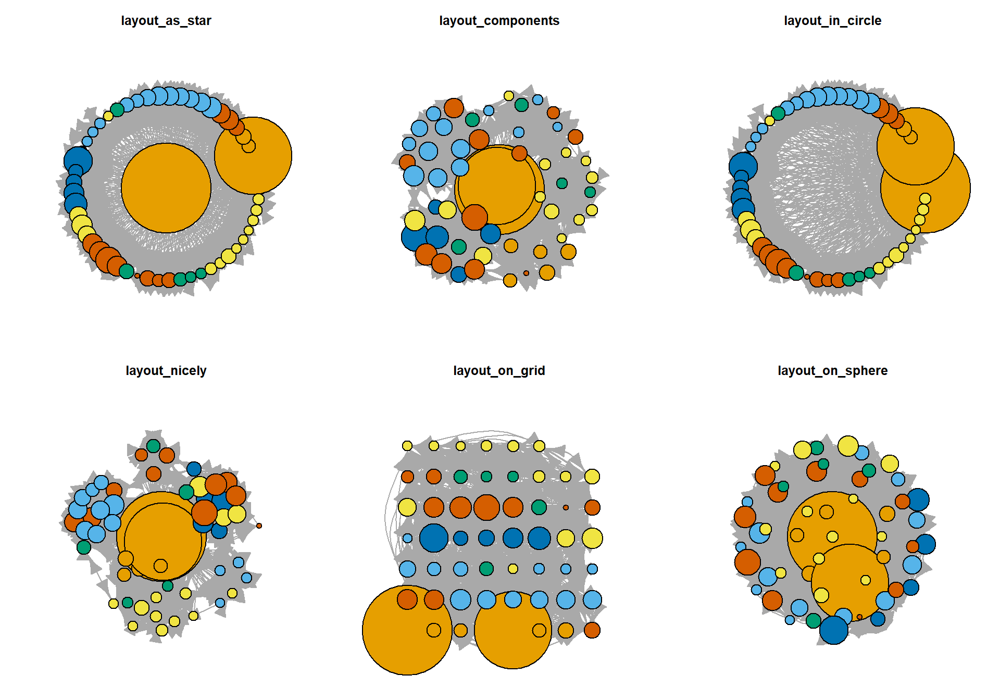
par(mfrow = c(3, 3), mar = c(1, 1, 3, 1))
plot(GAStech_graph, layout = layout_randomly, main = "layout_randomly", vertex.label = NA)
plot(GAStech_graph, layout = layout_with_dh, main = "layout_with_dh", vertex.label = NA)
plot(GAStech_graph, layout = layout_with_drl, main = "layout_with_drl", vertex.label = NA)
plot(GAStech_graph, layout = layout_with_fr, main = "layout_with_fr", vertex.label = NA)
plot(GAStech_graph, layout = layout_with_gem, main = "layout_with_gem", vertex.label = NA)
plot(GAStech_graph, layout = layout_with_graphopt, main = "layout_with_graphopt", vertex.label = NA)
plot(GAStech_graph, layout = layout_with_kk, main = "layout_with_kk", vertex.label = NA)
plot(GAStech_graph, layout = layout_with_lgl, main = "layout_with_lgl", vertex.label = NA)
plot(GAStech_graph, layout = layout_with_mds, main = "layout_with_mds", vertex.label = NA)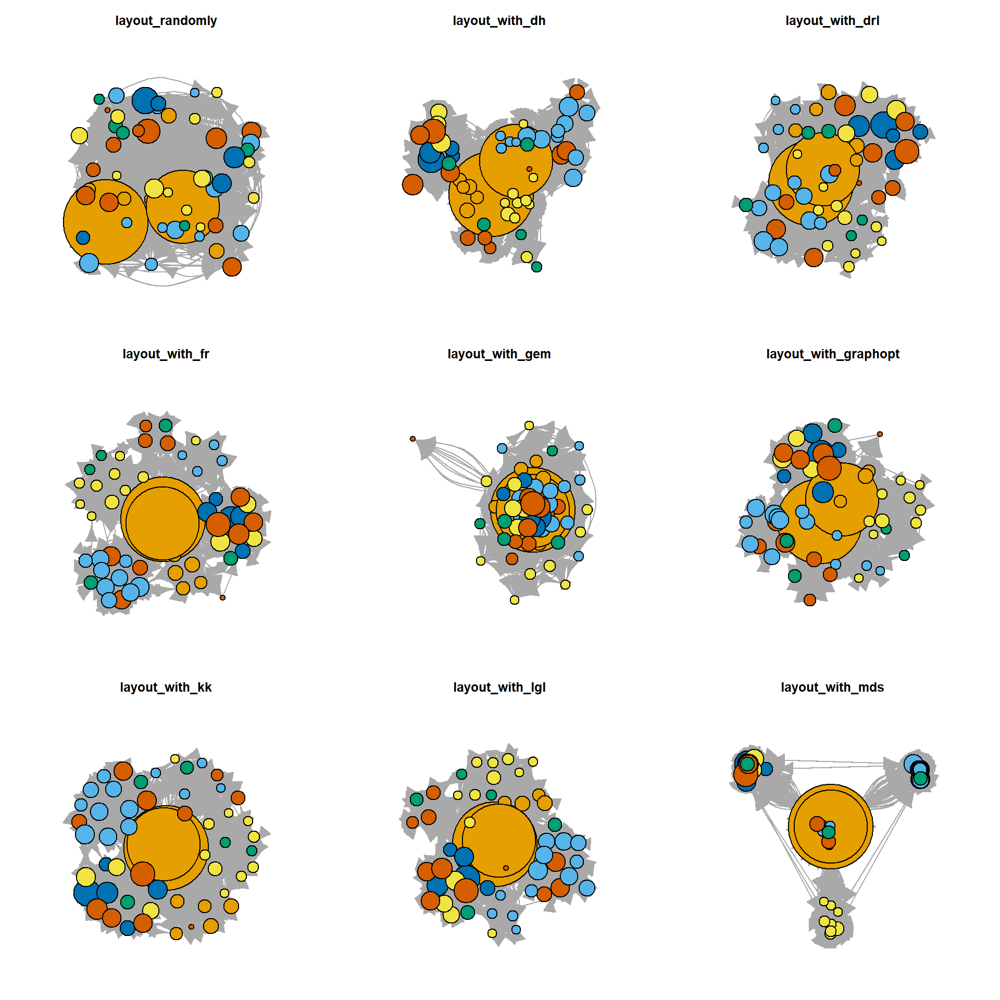
NoteThings to learn from the code chunk above
V(GAStech_graph)$color and V(GAStech_graph)$size set node attributes that base R plot.igraph() reads. par(mfrow = c(2, 3)) arranges the panels in a 2 by 3 grid, and the same trick with c(3, 3) produces the 3 by 3 grid. The main argument labels each panel with the layout function name.
TipReading the plot
Force-directed layouts like fr, kk, gem and graphopt produce visually similar results that emphasise cluster structure. Geometric layouts like star, circle, grid and sphere impose a fixed shape that ignores network structure. randomly is a useful baseline that shows how much the meaningful layouts contribute.
27.5.5 Fruchterman and Reingold layout
The Fruchterman-Reingold layout treats edges as springs and nodes as repelling particles, settling into a configuration where tightly connected groups cluster together.
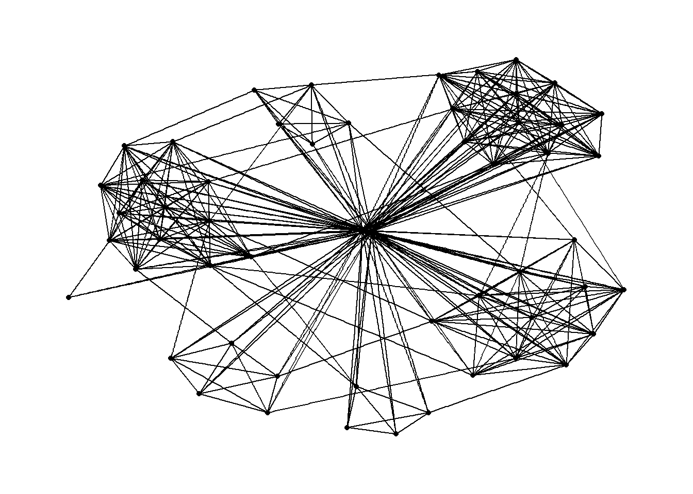
g <- ggraph(GAStech_graph,
layout = "fr") +
geom_edge_link(aes()) +
geom_node_point(aes())
g + theme_graph()
NoteThings to learn from the code chunk above
layout = "fr" requests Fruchterman-Reingold. The result is non-deterministic, so two runs produce slightly different positions. Setting a random seed before plotting fixes the layout for reproducibility.
27.5.6 Modifying network nodes
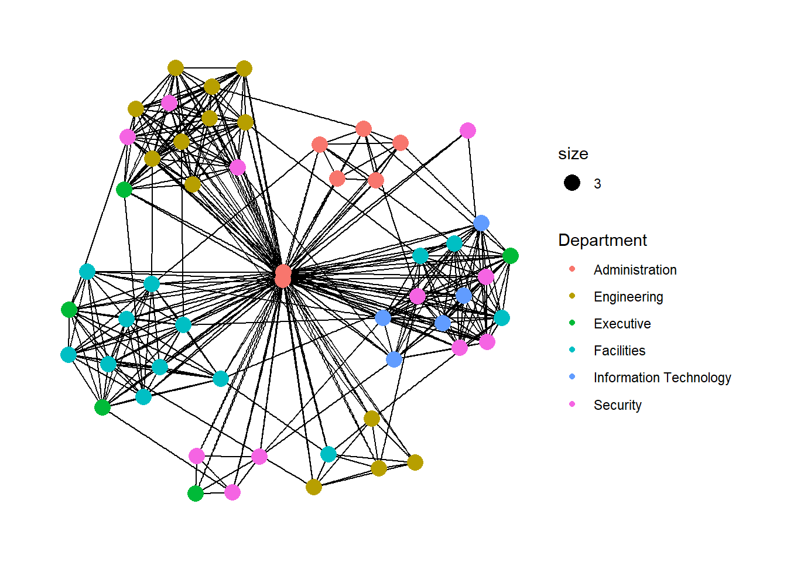
g <- ggraph(GAStech_graph,
layout = "nicely") +
geom_edge_link(aes()) +
geom_node_point(aes(colour = Department,
size = 3))
g + theme_graph()
NoteThings to learn from the code chunk above
geom_node_point() behaves like geom_point() in ggplot2. The colour = Department aesthetic encodes the department of each employee, and the constant size = 3 enlarges every node for readability.
TipReading the plot
Departments cluster together because employees email their own department more than other departments. The visual grouping is an emergent property of the layout algorithm rather than something hard-coded by the colour mapping.
27.5.7 Modifying edges
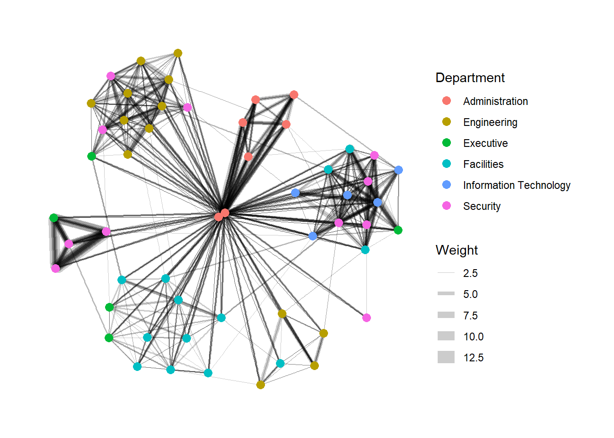
g <- ggraph(GAStech_graph,
layout = "nicely") +
geom_edge_link(aes(width = Weight),
alpha = 0.2) +
scale_edge_width(range = c(0.1, 5)) +
geom_node_point(aes(colour = Department),
size = 3)
g + theme_graph()
NoteThings to learn from the code chunk above
width = Weight maps the edge thickness to the number of emails in that pair-weekday. scale_edge_width(range = c(0.1, 5)) clamps the actual rendered widths so the thinnest are still visible and the thickest do not dominate. alpha = 0.2 partially fixes the overplotting that arises when many edges cross.
27.6 Creating facet graphs
Faceting splits one graph into a panel grid, which reduces edge overplotting when the network has too many edges to read at once. Three functions support this. facet_nodes() splits by a node attribute, facet_edges() splits by an edge attribute and facet_graph() splits on two variables at once.
27.6.1 Working with facet_edges()
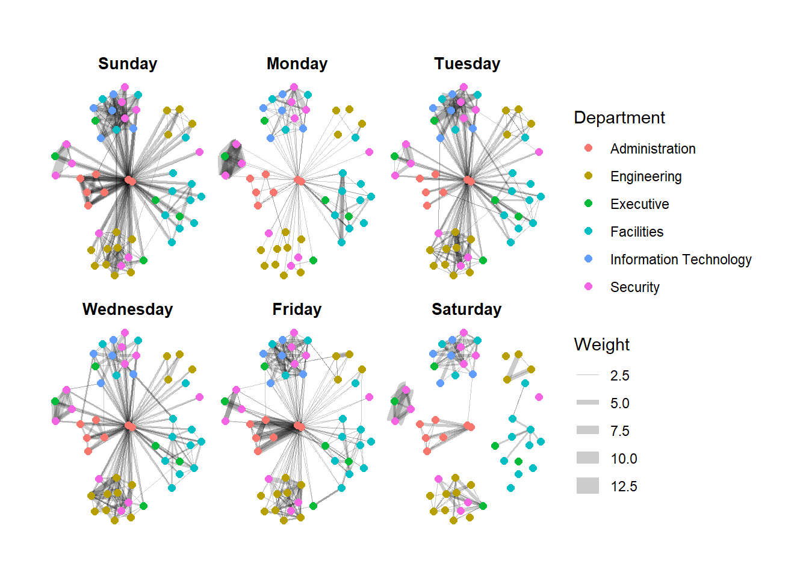
set_graph_style()
g <- ggraph(GAStech_graph,
layout = "nicely") +
geom_edge_link(aes(width = Weight),
alpha = 0.2) +
scale_edge_width(range = c(0.1, 5)) +
geom_node_point(aes(colour = Department),
size = 2)
g + facet_edges(~Weekday)
NoteThings to learn from the code chunk above
facet_edges(~Weekday) keeps the node positions fixed across all panels and shows only the edges that occurred on each weekday. The unchanged node positions make the panels directly comparable across days.
TipReading the plot
Weekday volume varies substantially. The differences between weekdays would be invisible in a single graph because all edges would superimpose into one tangle.
27.6.2 Adjusting the legend position
The legend is moved below the panels with theme(legend.position = 'bottom').
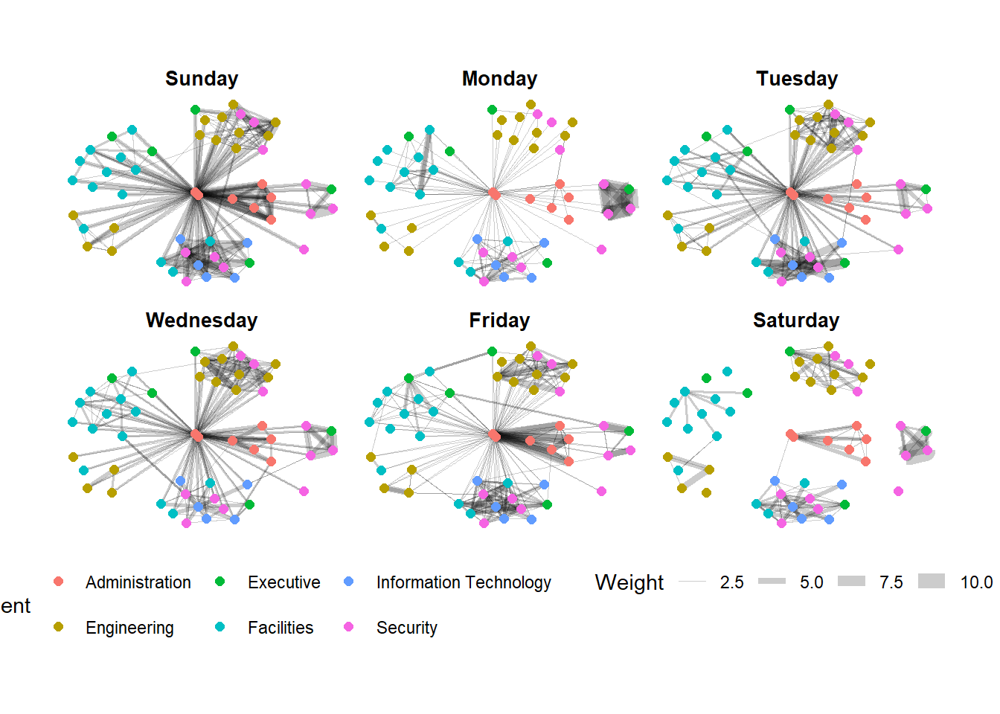
set_graph_style()
g <- ggraph(GAStech_graph,
layout = "nicely") +
geom_edge_link(aes(width = Weight),
alpha = 0.2) +
scale_edge_width(range = c(0.1, 5)) +
geom_node_point(aes(colour = Department),
size = 2) +
theme(legend.position = 'bottom')
g + facet_edges(~Weekday)
NoteThings to learn from the code chunk above
legend.position = 'bottom' moves the legend below the panels to recover horizontal space.
27.6.3 A framed facet graph
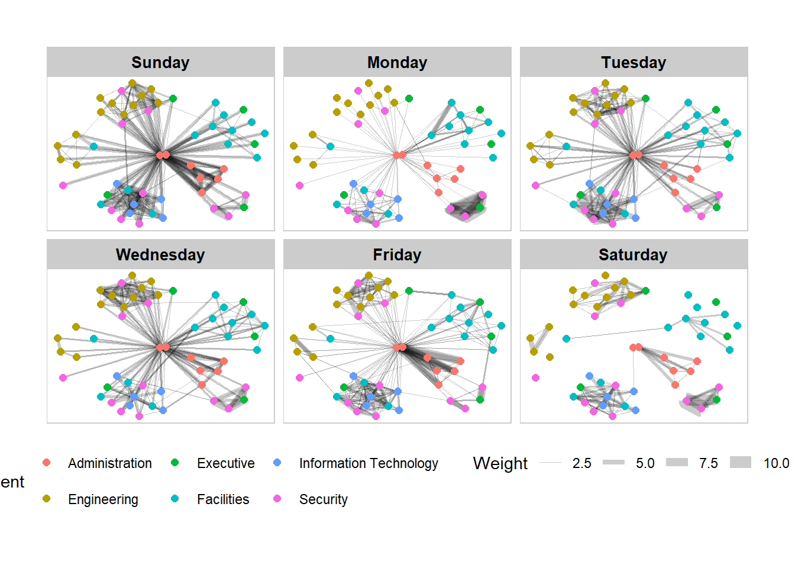
set_graph_style()
g <- ggraph(GAStech_graph,
layout = "nicely") +
geom_edge_link(aes(width = Weight),
alpha = 0.2) +
scale_edge_width(range = c(0.1, 5)) +
geom_node_point(aes(colour = Department),
size = 2)
g + facet_edges(~Weekday) +
th_foreground(foreground = "grey80",
border = TRUE) +
theme(legend.position = 'bottom')
NoteThings to learn from the code chunk above
th_foreground() adds a grey panel background with border = TRUE drawing a thin frame around each facet. The borders help separate the panels visually when the layout pushes edges close to the panel edges.
27.6.4 Working with facet_nodes()
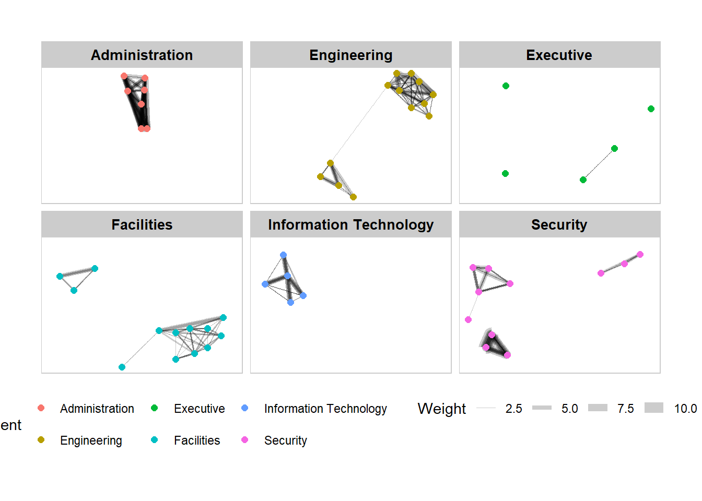
set_graph_style()
g <- ggraph(GAStech_graph,
layout = "nicely") +
geom_edge_link(aes(width = Weight),
alpha = 0.2) +
scale_edge_width(range = c(0.1, 5)) +
geom_node_point(aes(colour = Department),
size = 2)
g + facet_nodes(~Department) +
th_foreground(foreground = "grey80",
border = TRUE) +
theme(legend.position = 'bottom')
NoteThings to learn from the code chunk above
facet_nodes(~Department) shows the subgraph induced by each department, including only edges where both endpoints are in that department. Cross-department edges are dropped from every panel.
27.7 Network Metrics Analysis
27.7.1 Computing centrality indices
Centrality measures rank nodes by their structural importance in the network. The four canonical measures are degree (count of neighbours), betweenness (how often a node sits on shortest paths), closeness (inverse average distance to all other nodes) and eigenvector (importance weighted by neighbour importance).
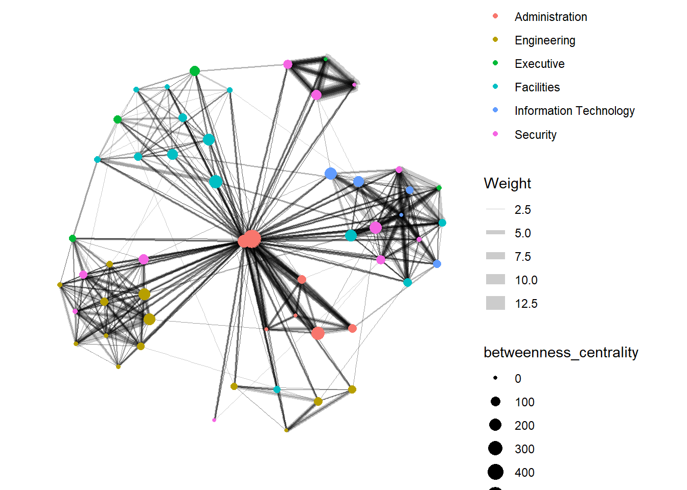
g <- GAStech_graph %>%
mutate(betweenness_centrality = centrality_betweenness()) %>%
ggraph(layout = "fr") +
geom_edge_link(aes(width = Weight),
alpha = 0.2) +
scale_edge_width(range = c(0.1, 5)) +
geom_node_point(aes(colour = Department,
size = betweenness_centrality))
g + theme_graph()
NoteThings to learn from the code chunk above
mutate(betweenness_centrality = centrality_betweenness()) computes betweenness for each node and stores it as a new column on the active node tibble. Mapping it to size makes the most “bridge-like” employees appear as the largest points.
TipReading the plot
The largest nodes are not the busiest emailers but the ones who connect otherwise distant parts of the network. They are typically managers or assistants whose role is to broker communication between departments.
27.7.2 Visualising network metrics
From ggraph 2.0 onwards, centrality measures can be computed inline inside an aes() call without a preceding mutate().
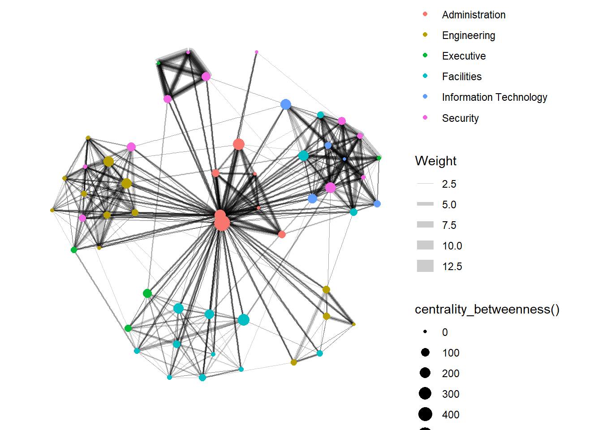
g <- GAStech_graph %>%
ggraph(layout = "fr") +
geom_edge_link(aes(width = Weight),
alpha = 0.2) +
scale_edge_width(range = c(0.1, 5)) +
geom_node_point(aes(colour = Department,
size = centrality_betweenness()))
g + theme_graph()
NoteThings to learn from the code chunk above
Calling centrality_betweenness() directly inside aes() removes the need to materialise the score on the graph object. The trade-off is that the score is recomputed on every plot, which matters for large graphs but not for this 54-node example.
27.7.3 Visualising Community
Community detection partitions nodes into clusters where within-cluster ties are denser than between-cluster ties. tidygraph inherits multiple algorithms from igraph, including edge-betweenness, leading eigenvector, fast-greedy, Louvain, walktrap, label propagation, InfoMap, spinglass and optimal.
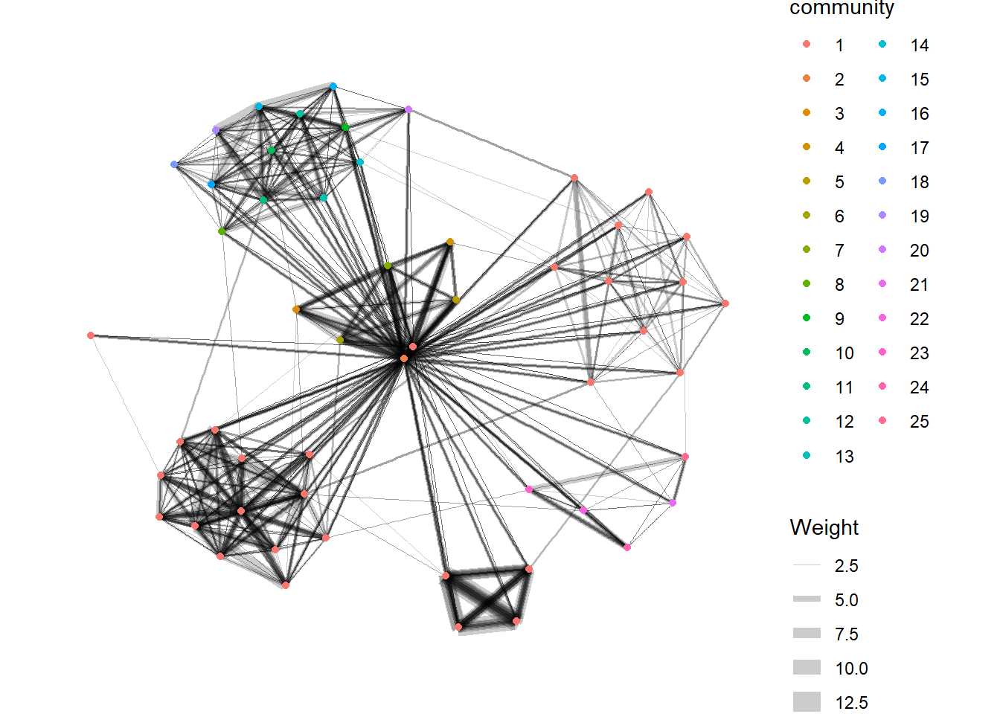
g <- GAStech_graph %>%
mutate(community = as.factor(
group_edge_betweenness(
weights = Weight,
directed = TRUE))) %>%
ggraph(layout = "fr") +
geom_edge_link(
aes(width = Weight),
alpha = 0.2) +
scale_edge_width(
range = c(0.1, 5)) +
geom_node_point(
aes(colour = community))
g + theme_graph()
NoteThings to learn from the code chunk above
group_edge_betweenness() returns a community ID per node, which is cast to factor so ggraph treats it as a categorical aesthetic. The algorithm progressively removes the edges with the highest betweenness until the graph fragments into communities.
The community network is further refined by drawing concave hulls around each detected community with geom_mark_hull() from ggforce.
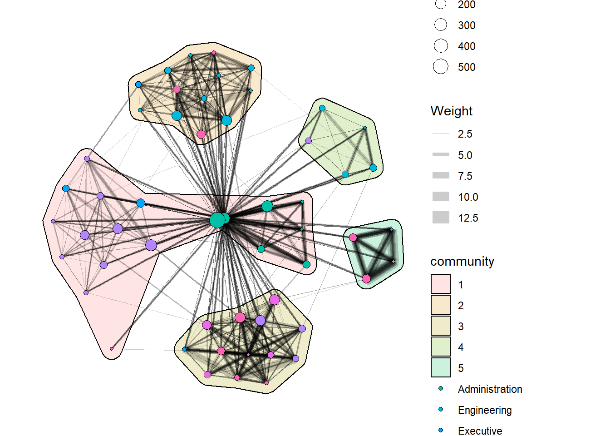
g <- GAStech_graph %>%
activate(nodes) %>%
mutate(community = as.factor(
group_optimal(weights = Weight)),
betweenness_measure = centrality_betweenness()) %>%
ggraph(layout = "fr") +
geom_mark_hull(
aes(x, y,
group = community,
fill = community),
alpha = 0.2,
expand = unit(0.3, "cm"),
radius = unit(0.3, "cm")
) +
geom_edge_link(aes(width = Weight),
alpha = 0.2) +
scale_edge_width(range = c(0.1, 5)) +
geom_node_point(aes(fill = Department,
size = betweenness_measure),
color = "black",
shape = 21)
g + theme_graph()
NoteThings to learn from the code chunk above
geom_mark_hull() from ggforce draws a smoothed concave hull around each community. expand controls how much padding sits between the outermost nodes and the hull edge, and radius controls the corner smoothness. Combining community membership (hull fill) with department (node fill) reveals whether the structural communities match the formal organisation chart.
TipReading the plot
When hull membership matches department colour, the formal structure drives communication. Hulls that span multiple departments flag informal collaboration that the org chart misses.
27.8 Building Interactive Network Graph with visNetwork
visNetwork wraps the vis.js JavaScript library. It accepts a nodes data frame with an id column and an edges data frame with from and to columns.
27.8.1 Data preparation
GAStech_edges_aggregated <- GAStech_edges %>%
left_join(GAStech_nodes, by = c("sourceLabel" = "label")) %>%
rename(from = id) %>%
left_join(GAStech_nodes, by = c("targetLabel" = "label")) %>%
rename(to = id) %>%
filter(MainSubject == "Work related") %>%
group_by(from, to) %>%
summarise(weight = n()) %>%
filter(from != to) %>%
filter(weight > 1) %>%
ungroup()
NoteThings to learn from the code chunk above
The two left_join() calls translate sender and recipient labels into the numeric IDs that visNetwork expects. The renames to from and to are mandatory because those are the column names the function looks for.
27.8.2 Plotting the first interactive network graph
visNetwork(GAStech_nodes,
GAStech_edges_aggregated)
NoteThings to learn from the code chunk above
visNetwork() accepts the nodes and edges directly. The default layout is a physics simulation that runs in the browser, so the graph drifts into place after the page loads.
27.8.3 Working with layout
visNetwork(GAStech_nodes,
GAStech_edges_aggregated) %>%
visIgraphLayout(layout = "layout_with_fr")
NoteThings to learn from the code chunk above
visIgraphLayout() pre-computes the layout using an igraph algorithm (layout_with_fr for Fruchterman-Reingold) and disables the browser-side physics. The visible benefit is a static, reproducible layout that loads instantly.
27.8.4 Working with visual attributes - Nodes
GAStech_nodes <- GAStech_nodes %>%
rename(group = Department)
visNetwork(GAStech_nodes,
GAStech_edges_aggregated) %>%
visIgraphLayout(layout = "layout_with_fr") %>%
visLegend() %>%
visLayout(randomSeed = 123)
NoteThings to learn from the code chunk above
visNetwork colours nodes automatically when there is a column named group, so renaming Department to group is enough to trigger colour-by-department. visLegend() adds a clickable legend, and visLayout(randomSeed = 123) makes the layout deterministic across reloads.
27.8.5 Working with visual attributes - Edges
visNetwork(GAStech_nodes,
GAStech_edges_aggregated) %>%
visIgraphLayout(layout = "layout_with_fr") %>%
visEdges(arrows = "to",
smooth = list(enabled = TRUE,
type = "curvedCW")) %>%
visLegend() %>%
visLayout(randomSeed = 123)
NoteThings to learn from the code chunk above
arrows = "to" adds arrowheads at the destination end, restoring the directional information that the static ggraph examples did not encode. smooth = list(enabled = TRUE, type = "curvedCW") bends edges into clockwise curves so reciprocal pairs no longer superimpose.
27.8.6 Interactivity
visNetwork(GAStech_nodes,
GAStech_edges_aggregated) %>%
visIgraphLayout(layout = "layout_with_fr") %>%
visOptions(highlightNearest = TRUE,
nodesIdSelection = TRUE) %>%
visLegend() %>%
visLayout(randomSeed = 123)
NoteThings to learn from the code chunk above
highlightNearest = TRUE dims everything except the clicked node and its direct neighbours, isolating one ego network at a time. nodesIdSelection = TRUE adds a dropdown for selecting a node by ID, which scales better than clicking when the network has many nodes.
TipReading the plot
Click-to-highlight turns the static map into a single-node investigation tool. The viewer can pick any employee and immediately see who they communicate with, which is the same question a static facet plot answers at the cost of an entire panel.
27.9 Reference
Kam, Tin Seong. R for Visual Analytics. Singapore Management University, 2024.
🕹️ LEVEL COMPLETE 🕹️
★ ★ ★ ★ ★
CHAPTER 27 CLEARED!
+1000 XP · ACHIEVEMENT UNLOCKED: Network Navigator 🕸️
Press any key to continue…